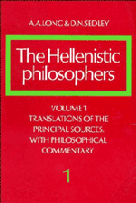
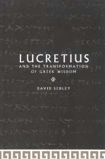
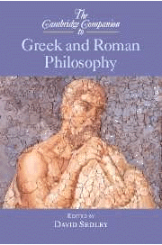
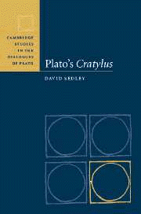
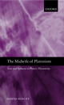
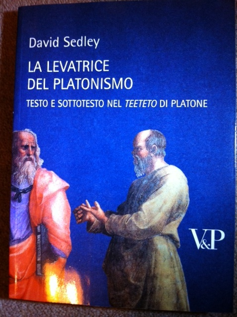
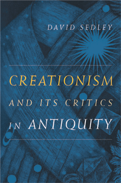
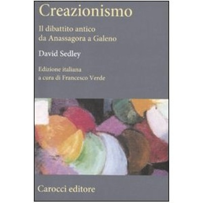
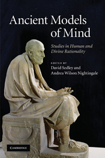
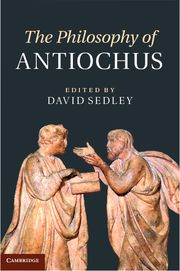

Books
(with A.A. Long) The Hellenistic Philosophers
 (Cambridge 1987); vol. 1, xv + 512 pp.; vol. 2, xi + 512 pp. (German edition, tr. K. Hülser, Stuttgart 2000; French edition, tr. J. Brunschwig and P. Pellegrin,Paris, 2001); Hungarian edition, tr. L. Bene et al., 2015
Lucretius and the Transformation of Greek Wisdom
 (Cambridge 1998) paperback edition, September 2003
(editor) The Cambridge Companion to Greek and Roman Philosophy
(Cambridge 2003) 
Plato’s Cratylus
(= the Townsend Lectures, Cornell University,fall semester 2001; in M.M. McCabe, ed., Cambridge Studies in the Dialogues of Plato)(Cambridge, 2003) 
The Midwife of Platonism. Text and Subtext in Plato’s Theaetetus
(Oxford, May 2004; paperback edn. Sept. 2006) 
Italian translation, La levatrice del platonismo
(Milan, 2011) 
Creationism and its Critics in Antiquity
Sather Classical Lectures 66 (Berkeley and Los Angeles, 2007) 
Italian translation, Creazionismo. Il dibattito antico da Anassagora a Galeno
(Rome, 2011) 
(ed., with A.M. Ioppolo) Pyrrhonists, Patricians, Platonizers. Hellenistic Philosophy in the Period 155-86 BC
(Naples, 2007)
(ed., with Andrea Nightingale) _Ancient Models of Mind: Studies in Human and Divine Rationality_
(volume of essays in honour of A.A. Long; Cambridge, 2010) 
(with Alex Long) _Plato: Meno and Phaedo_
(translation with introduction and notes; Cambridge, 2010)
The Philosophy of Antiochus
editor (Cambridge, 2012) 